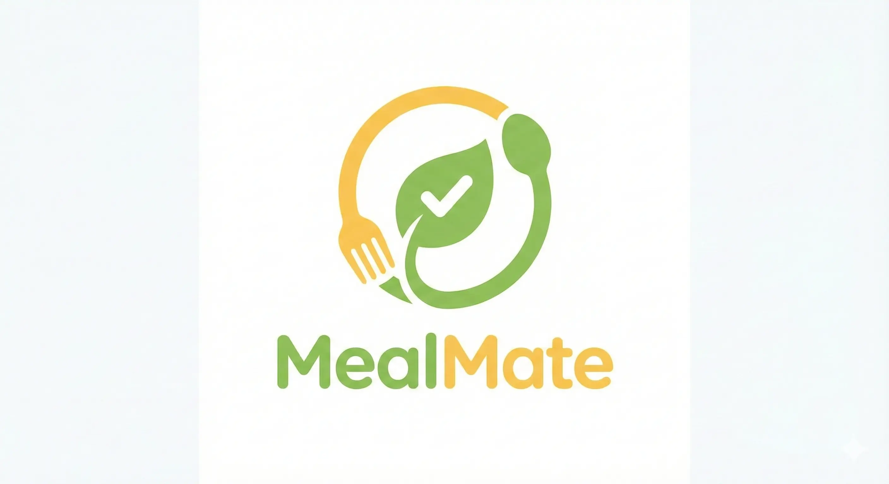
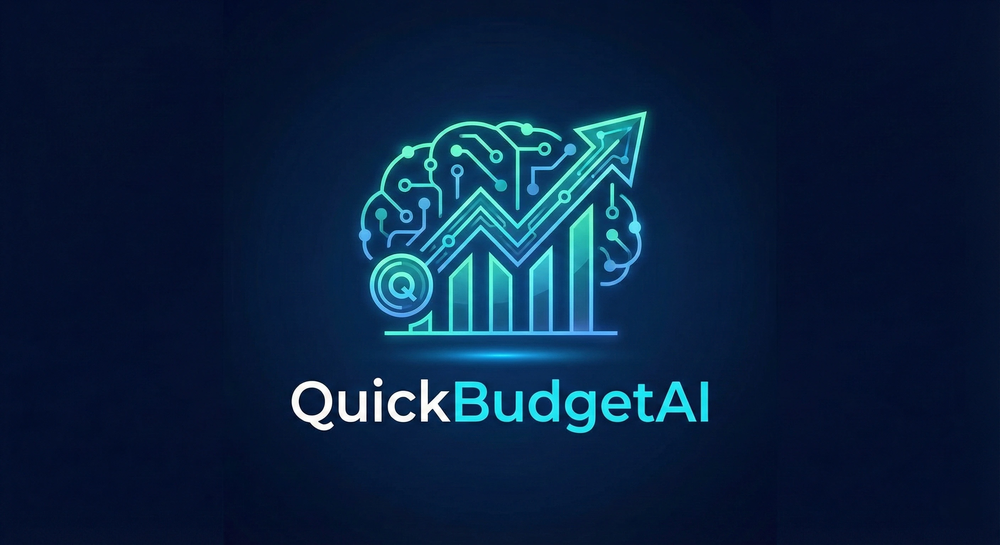
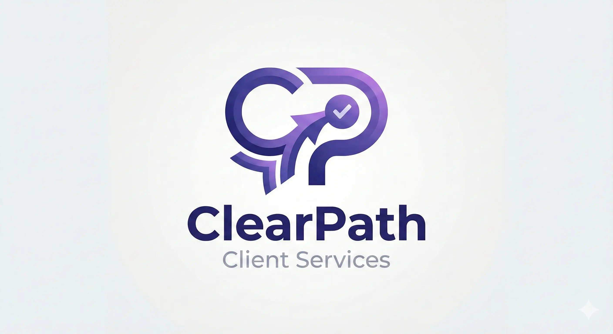
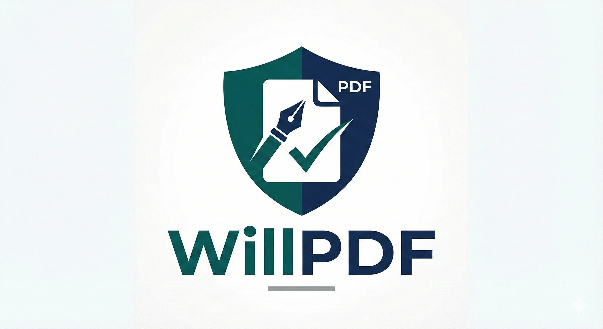
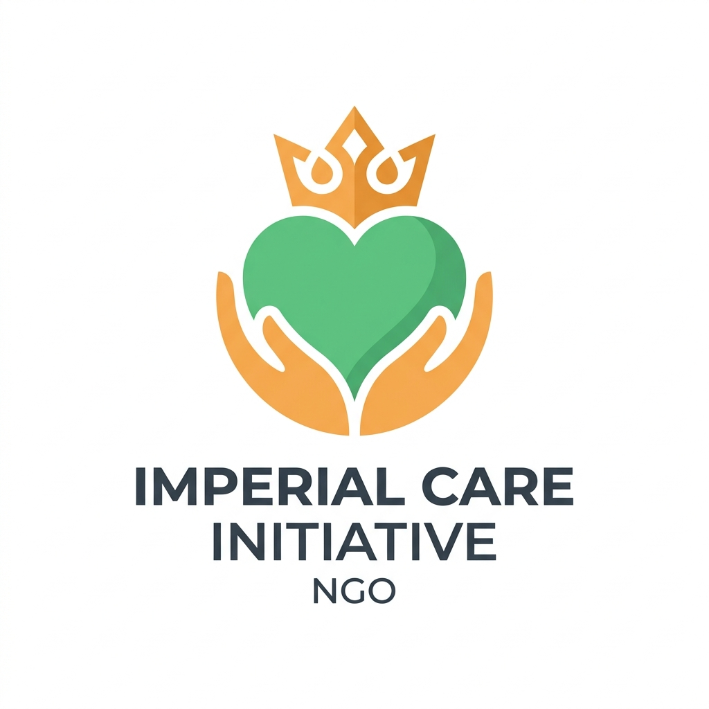
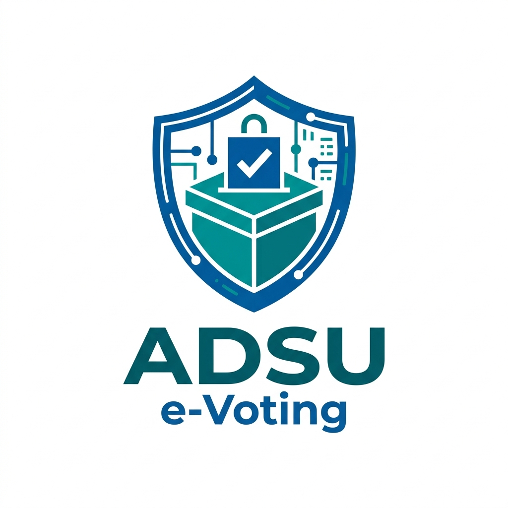
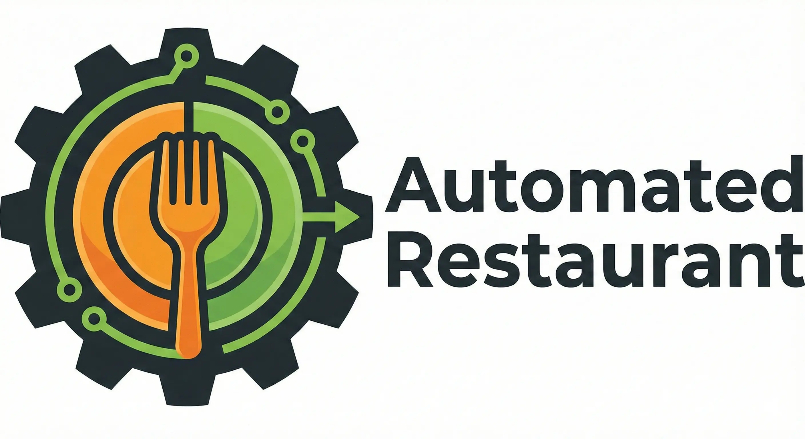
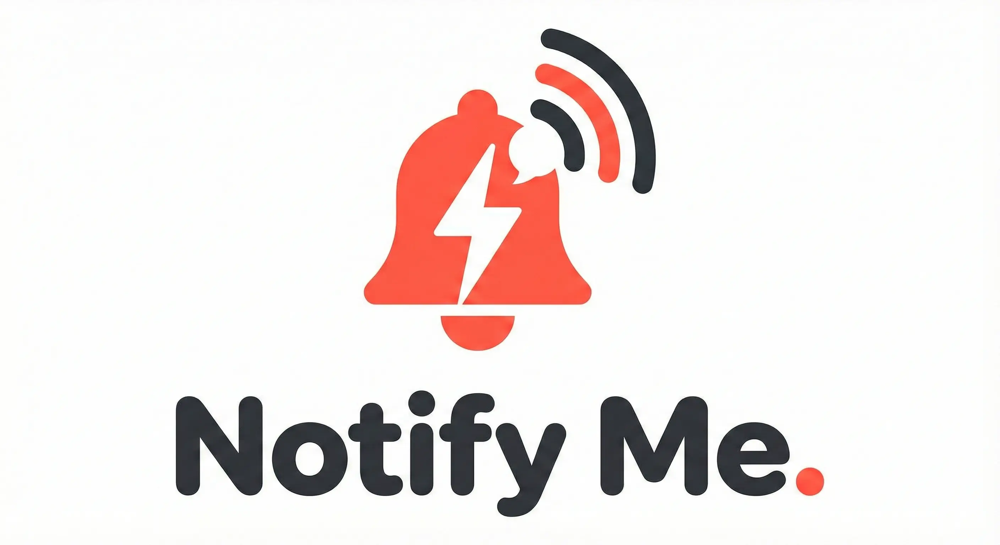

Real projects. Real challenges. Real results. Here's how we've helped organizations solve complex software problems.
An academic institution needed a centralized, secure directory to manage diverse staff profiles across multiple departments. Their existing spreadsheet-based system was creating data inconsistencies, making it impossible to maintain accurate records or provide a professional public-facing directory.
We engineered a custom web application with role-based access control, multi-level user permissions, and a highly responsive front-end. Department heads can manage their own staff records while administrators maintain full oversight. The system includes a public-facing directory with advanced search and filtering.
Eliminated manual data management, reduced administrative overhead by an estimated 60%, and provided a professional staff directory that reflects the institution's credibility.
Academic Journal Platform
A research organization required a complex Open Journal Systems (OJS) deployment on a subdomain, requiring custom modifications to fit their specific publishing workflow. Standard OJS installations lacked the customization needed for their editorial process and branding requirements.
We handled the end-to-end installation, server configuration, and custom theme modifications, ensuring a seamless editorial process. This included configuring multi-stage peer review workflows, custom submission forms, and a branded public-facing journal interface.
A fully operational academic publishing platform that handles the complete submission-to-publication lifecycle, with a professional interface that meets international academic publishing standards.
A business needed a complete website redesign to improve lead generation and user experience. Their existing site had poor conversion rates, slow load times, and wasn't optimized for mobile — resulting in lost business opportunities.
We delivered a custom WordPress website design, optimized for fast loading and responsive across all devices. The new site featured clear conversion pathways, optimized contact forms, and a content structure designed to capture high-intent leads.
Improved page load times, a mobile-first design that works across all devices, and a conversion-optimized layout that turns visitors into qualified leads.
B2B WordPress Hub
A selection of other applications our team has engineered

Health & Fitness meal planning application with recipe suggestions.
Health Tech
AI-powered personal finance and budgeting assistant with expense insights.
Finance & AI
Client management and service delivery tracking platform for businesses.
Business Management
Legal document generation and AI-powered PDF assistant for Windows.
Legal TechComplete redesign of the university’s main web portal, built for speed and SEO.
WordPress
Content-rich NGO website designed to drive engagement, donations, and events.
WordPress
Secure, real-time electronic voting platform for student and academic elections.
E-Voting / Security
Digital menu and POS management solution to streamline restaurant ordering.
POS / Restaurant
PWA that delivers instant, customizable email alerts for remote job listings.
Job Alerts / PWAHR Leave management and compliance assistant tracking FMLA and CFRA laws.
HR & ComplianceMulti-role support ticket system facilitating student complaints and response workflows.
Helpdesk / SupportWeb app streamlining registration and automated QR code-enabled ID card export.
ID Gen / NextJSLet's discuss your challenge and engineer the right solution together.
Let's Talk About Your Project